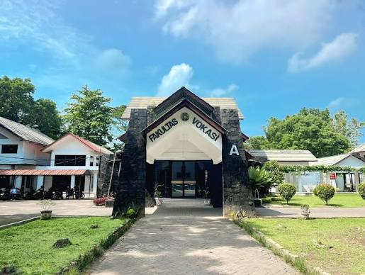

Membangun hubungan
Membangun hubungan yang aktif dan kolaboratif.
Mengenal BEM Fakultas Vokasi USU, arah gerak organisasi, serta mahasiswa yang bertumbuh dan bergerak bersama melalui Kabinet Vokasi Berdaya.
Kenali kami lebih dekatBadan Eksekutif Mahasiswa (BEM) Fakultas Vokasi USU adalah lembaga eksekutif tertinggi di tingkat fakultas yang menaungi seluruh program studi vokasi. Kami berperan sebagai penghubung antara mahasiswa dan pihak fakultas, sekaligus menjadi wadah pengembangan diri lewat keorganisasian, kepanitiaan, dan program kerja lintas departemen.

Terwujudnya BEM Fakultas Vokasi sebagai rumah bersama mahasiswa yang aktif, inklusif, transparan, kolaboratif dan progresif dalam meningkatkan partisipasi mahasiswa pada kegiatan akademik dan non-akademik, memperkuat budaya kepemimpinan mahasiswa, serta menjadi jembatan aspirasi mahasiswa di lingkungan kampus.
Langkah yang kami bangun bersama untuk menciptakan lingkungan mahasiswa yang aktif, suportif, dan berdampak.
Membangun hubungan yang aktif dan kolaboratif.
Meningkatkan partisipasi mahasiswa.
Membangun lingkungan organisasi yang sehat dan suportif.
Melahirkan kader pemimpin yang progresif dan berintegritas.
Membangun budaya kritis dan kepedulian mahasiswa.
Mendorong digitalisasi dan keterbukaan informasi organisasi.
Mengawal pengelolaan organisasi yang transparan, akuntabel, tepat guna dan profesional.
Penyediaan fasilitas dan ruang aktivitas kemahasiswaan yang layak.
Kenali departemen dan biro yang menjadi bagian dari Kabinet Vokasi Berdaya serta perannya dalam menjalankan program kerja organisasi.